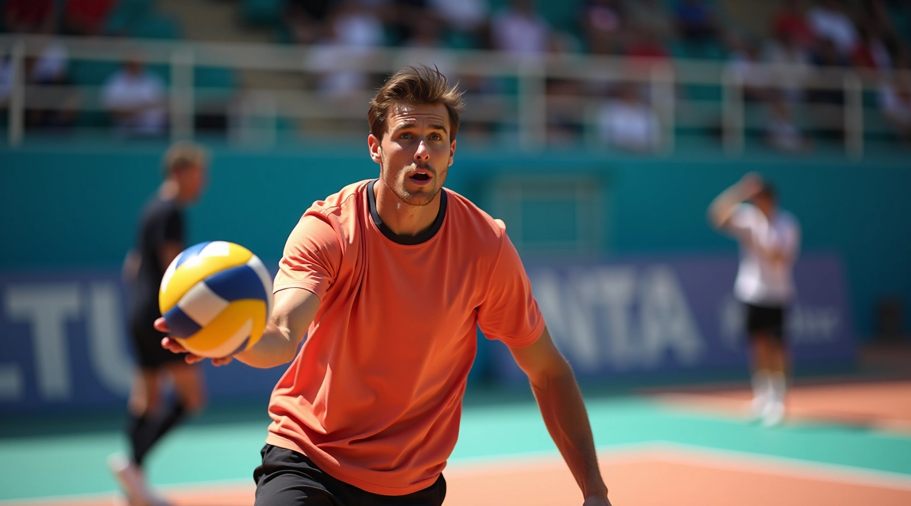
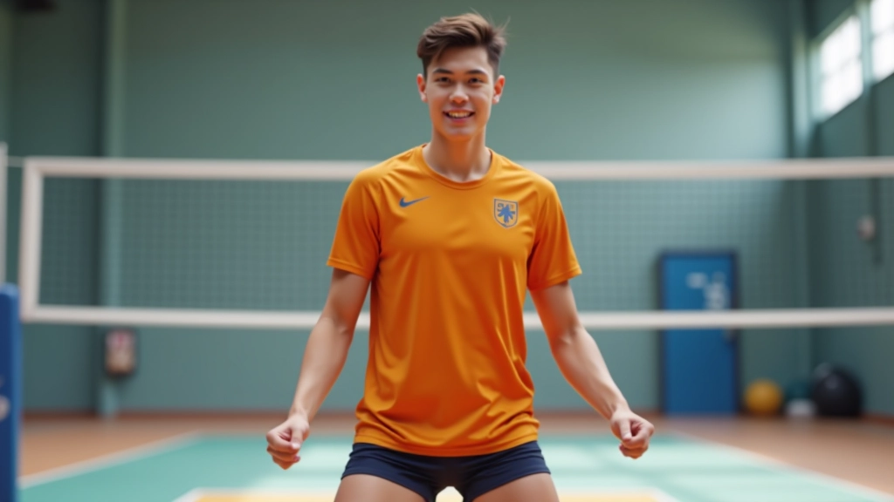
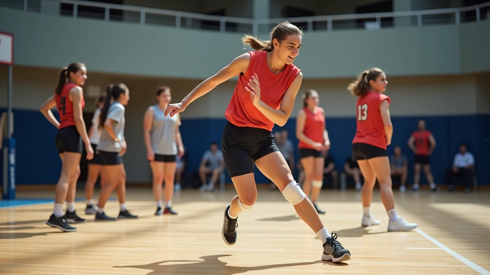
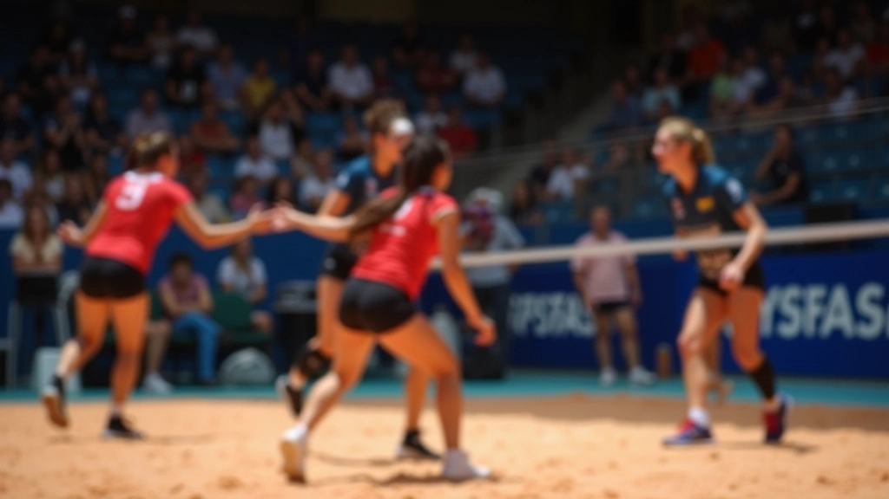
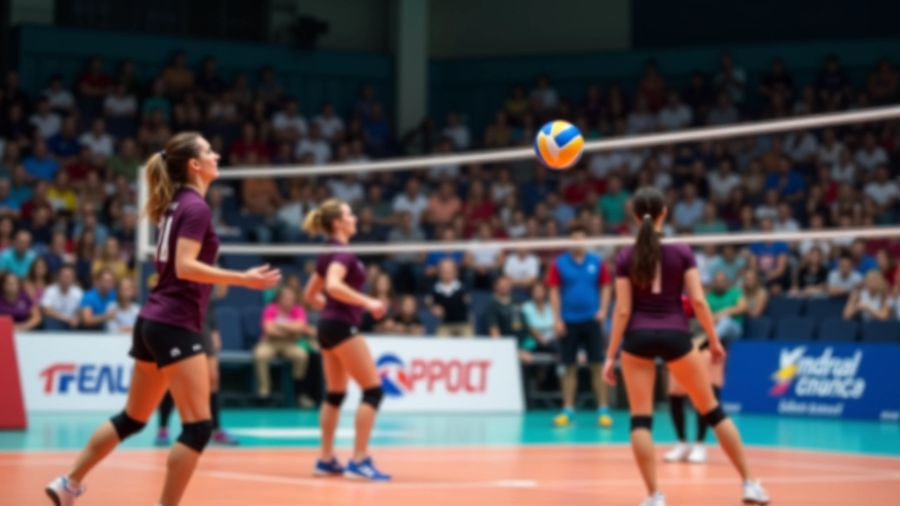
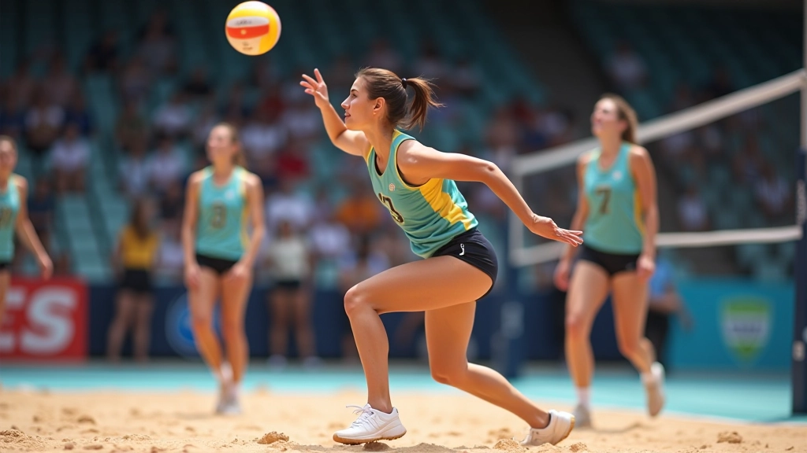

أساسيات الحركة والتمركز الدفاعي
تعلم كيفية اتخاذ المواقع الصحيحة في منطقة الدفاع وكيفية تحريك قدميك بكفاءة للتجاوب السريع مع الهجمات

لماذا تعتبر الأساسيات حاسمة؟
الموقع الدفاعي الصحيح هو أساس كل شيء في لعبة الليبرو. عندما تكون واقفاً بالطريقة الصحيحة، يمكنك التحرك بسرعة وثقة نحو أي اتجاه. لا يتعلق الأمر فقط بأين تقف — بل كيف تقف. أرجلك، جسمك، وتركيزك كله يجب أن يكون جاهزاً للتجاوب الفوري.
معظم اللاعبين الجدد يركزون على المهارات الصعبة — الحفر العميق، الاستقبال الرديء — لكن النتيجة الحقيقية تأتي من إتقان الأساسيات. خذ الوقت الآن لتعلم هذه المبادئ بشكل صحيح، وستصبح لاعب دفاع موثوق.
الموقع الدفاعي الأساسي
الوقفة الأساسية في الدفاع تبدأ بقدميك. يجب أن تكونا متباعدتان بمسافة تقريباً بعرض أكتافك — حوالي 45-50 سم تقريباً. كل قدم تشير قليلاً للخارج بزاوية 10-15 درجة.
القدمان والأرجل
ركبتاك يجب أن تكونا منحنيتان قليلاً — ليس بزاوية حادة جداً، لكن بما يكفي حتى تشعر بالتوتر العضلي. هذا يعطيك القوة لتنطلق بسرعة في أي اتجاه. وزنك يجب أن يكون موزعاً بالتساوي على كلا القدمين، مع نقل بسيط نحو الأمام.
الجسم والذراعان
جذعك يجب أن يكون منتصباً قليلاً للأمام — ليس ممدوداً تماماً، لكن جاهزاً. ذراعاك تكونان معلقتين أمامك بزاوية طبيعية، جاهزتان للرفع والحفر. أصابع يديك تشير للأمام قليلاً، تماماً كأنك على استعداد للقبض على الكرة.

ملاحظة تعليمية
هذا الدليل مقدم بقصد تعليمي وإعلامي فقط. الحركات والمواقع الموصوفة هنا هي إرشادات عامة قد تختلف حسب نمط لعبتك الشخصي وتدريبك. نوصي دائماً باستشارة مدرب متخصص لتقييم تقنيتك وتقديم تعليقات شخصية مناسبة لاحتياجاتك الفردية.
حركة القدمين والتجاوب السريع
بعد أن تأخذ الموقع الأساسي، الخطوة التالية هي التحرك. لا تأخذ خطوات كبيرة. بدلاً من ذلك، استخدم خطوات صغيرة وسريعة — ما يسميه الكثيرون "shuffle steps". هذه الخطوات الصغيرة تسمح لك بالبقاء منخفضاً وتحت السيطرة.
الخطوة الأمامية
عندما تحتاج للتحرك للأمام، انطلق من قدميك بدفعة صغيرة وخذ خطوات سريعة متتالية. حافظ على توازنك وتركيزك على الكرة.
الحركة الجانبية
للتحرك جانباً، قم بخطوة جانبية صغيرة بالقدم الأقرب للاتجاه المطلوب، ثم اتبعها بالقدم الأخرى. لا تتقاطع أرجلك — هذا يفقدك التوازن.
الحركة للخلف
إذا احتجت للتراجع، لا تركض للخلف. خذ خطوات صغيرة للخلف مع الحفاظ على مواجهتك للشبكة. ابقَ جاهزاً للتوقف والحفر بسرعة.
توقيت الحركة والاستعداد
الموقع الصحيح يعني أيضاً أن تكون في المكان الصحيح في الوقت المناسب. هذا يتطلب قراءة جيدة للعبة والتنبؤ بأين ستذهب الكرة. عندما يقترب الخصم من الشبكة للهجوم، يجب أن تتحرك بالفعل نحو الموقع المتوقع للكرة.
قبل الهجوم
كن في موقع جاهز ومنخفض قليلاً. عينك على الهاجم وحركته. ركبتاك منحنيتان وجسمك متقدم قليلاً.
أثناء الهجوم
انتبه لاتجاه الهاجم وحركة الكرة. ابدأ بخطوات صغيرة تحضيرية لتكون جاهزاً للانطلاق في أي اتجاه.
بعد الضربة
انطلق نحو موقع الكرة بخطوات سريعة. كن منخفضاً وجاهزاً للحفر أو التمرير بناءً على اتجاه الكرة.
تمارين عملية للإتقان
المعرفة بالموقع الصحيح ليست كافية — يجب أن تمارسها مراراً وتكراراً حتى تصبح غريزية. عندما تلعب في مباراة حقيقية، لا يجب أن تفكر في موقعك — يجب أن تشعر به فقط.
ابدأ بتمارين بسيطة. قف في الموقع الأساسي وركز على الشعور الصحيح. حرك قدميك بخطوات صغيرة بطيئة في البداية. بعد بضع دقائق، زيد السرعة. لا تنتقل إلى تمارين أكثر تعقيداً إلا عندما تشعر بالراحة الحقيقية.

خطواتك التالية
أساسيات الحركة والتمركز الدفاعي ليست معقدة، لكنها تتطلب الممارسة المستمرة. لا تتوقع أن تتقنها بين عشية وضحاها — حتى أفضل اللاعبين في العالم يقضون وقتاً طويلاً في صقل هذه المهارات الأساسية.
ركز على قدميك أولاً. تأكد من أنك تقف بشكل صحيح. ثم ركز على الحركة والخطوات الصغيرة. بمجرد أن تشعر بالارتياح، ستكون جاهزاً للانتقال إلى تقنيات دفاعية أكثر تقدماً. استمر في العمل، وستجد أن ردود أفعالك الدفاعية تتحسن بشكل كبير.

فريق دفاع الليبرو التحريري
فريق التحرير والمراجعة
كتب بواسطة فريق دفاع الليبرو التحريري، المتخصص في توفير إرشادات عملية وموثوقة لتطوير المهارات الدفاعية.
مقالات ذات صلة

قراءة اللعبة والتنبؤ بالهجمات
تطور مهاراتك في التوقع والقراءة من خلال فهم أنماط اللاعب وحركات المهاجم

تقنيات الاستقبال والتمرير من المواقع الصعبة
اتقن فن استقبال الكرات الصعبة والمنخفضة والسريعة بتدريبات عملية

التكتيكات الدفاعية والتغطية الاستراتيجية
استكشف الأنماط التكتيكية المختلفة والتغطية الدفاعية التي يستخدمها الفريق